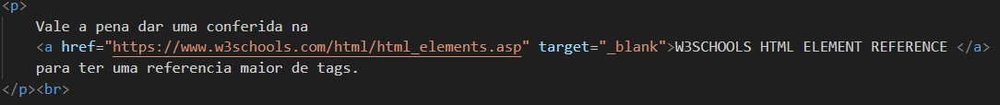

O documento HTML sempre inicia com o que chamamos de estrutura básica. Esta estrutura é quase que imutável.
Sempre será dessa forma e você sempre começará seu HTML por esse código.
Veja abaixo como ela se inicia:
É possível compreender o documento em HTML de uma maneira muito simples, através de uma divisão de blocos das tags essenciais, conforme a a seguinte estrutura:
- Definição do documento (DOCTYPE)
- Cabeça (head)
- Corpo (body)
Uma coisa importante: SEMPRE deve existir o doctype, que é este código !DOCTYPE html.
O doctype não é uma tag HTML, mas uma instrução para o navegador e outros programas que podem ler seu site,
que o código encontrado ali é um código HTML.
Assim eles sabem o que fazer para mostrar seu site da melhor forma possível.
o doctype é OBRIGATÓRIO e deve ser sempre a PRIMEIRA LINHA do seu documento.
Contém informações que não são transpostas visivelmente para o usuário/leitor do documento.
São dados implícitos, de uso e controle do documento: vinculação com outros arquivos, aplicação de lógica de programação de scripts e metadados.
Na prática, todo o conteúdo do cabeçalho fica delimitado entre a abertura e fechamento tag head.
Trata-se do documento em si, ou seja, a informação legível para o usuário/leitor do documento.
É todo e qualquer texto que se deseja apresentar, assim como toda e qualquer forma de mídia de saída
(imagens, sons, miniaplicativos embutidos, conteúdo multimídia, etc).
Além disso, toda a apresentação de entrada de dados (formulários) também se aplica neste seção do documento.
Na prática, o corpo do documento é delimitado pelo par de tags body e /body.
Este é o preceito básico que deve estar muito bem claro para você: onde as marcações se aplicam, e quais são os resultados deste modelo.
Por exemplo: se vocês deseja informar conteúdo textual para saída legível ao usuário do seu sistema web, esta marcação deverá obrigatoriamente estar no bloco do corpo da página.
Ainda: para definir qual o tipo de codificação da página (uma meta informação do documento), esta deve obrigatoriamente estar marcada no cabeçalho do mesmo documento.
Dentro do elemento BODY sua estrutura de página terá os elementos semânticos da construção da sua página, onde serão declarados e identificados cabeçalhos, rodapé, conteúdo principal, etc.
Existem milhares de tags, cada uma com sua função. São exemplos de tags de formatação de texto:

Perceba que é totalmente possível mesclar as tags em um texto, como demonstrado na linha 12 do exemplo.
Em sua grande maioria, as tags são representadas por <> para iniciar a tag e por <> com uma / dentro para p fechamento da tag, porém,
também existem algumas tags que não possuem uma segunda tag de fechamento, como por exemplo a tag input:
Os atributos são propriedades que as tags podem ter, existem atributos que são mais globais, "genericos", todas as tags vão ter, mas também existem atributos que são mais específicos de cada tag. São alguns exemplos de atributos:
O id representa um identificador para aquela tag especifica onde ele foi implementado. Assim podendo ser referenciado em alguma outra função de forma mais eficaz.

Consegue implementar um estilo css na tag.
A tag Img permite que insira uma imagem na pagina, especificando o caminho dela através do atributo src.
O atributo width no exemplo acima, permite manipular a dimensão da imagem.
Textos, basicamente, são os conteúdos que os usuarios vão ler em sua página. Para isso utilizamos algumas tipografias para organizar os textos em HTML:
Vale a pena dar uma conferida na W3SCHOOLS HTML ELEMENT REFERENCE para ter uma referencia maior de tags.
Existem dois tipos basicamente de listas, as Ordenadas e as Não Ordenadas que são representadas pelas tags ol e ul respectivamente, seguidas da tag li que representa cada item da lista.
Todo site precisa de links para "Linkar" ou navegar com outras paginas e interagir com conteúdos específicos através de uma conexão, para isso utilizamos a tag a como ancora para referenciar um link ou caminho especifico e o atributo href para especificar o caminho.
Por exemplo, no módulo de Textos utilizamos um link para referenciar o site W3Schools da seguinte forma:
O atributo target="_blank" também utilizado na tag IMG serve para atribuir um comportamento para o link, neste caso, o link será aberto em outra aba no navegador.